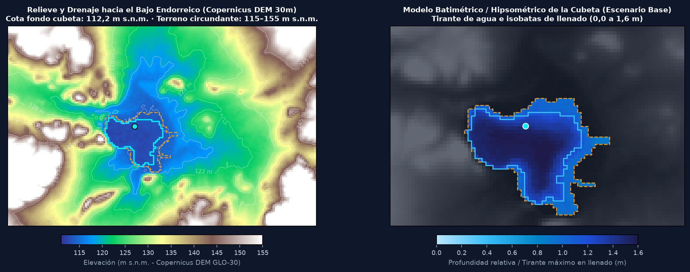
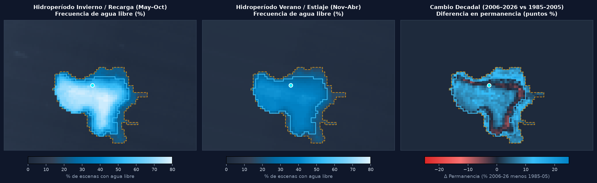
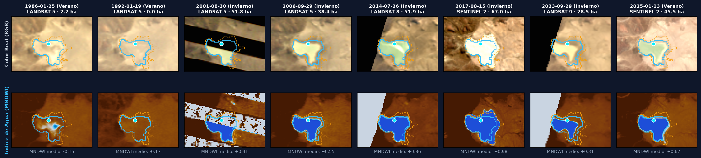

Evaluación integral de superficie inundada (ha), volumen almacenado (m³), curva hipsométrica Cota–Área–Volumen, garantía hidrológica y balance entre períodos húmedos de recarga (Invierno May–Oct) y períodos secos (Verano Nov–Abr).
Evolución interanual del almacenamiento hídrico en temporada húmeda de recarga (May–Oct) frente al estiaje de verano (Nov–Abr).
Relación física de llenado de la cubeta desde el fondo (112,20 m s.n.m.) hasta la expansión máxima (113,80 m s.n.m.) en los 3 escenarios.
| Garantía (Excedencia) | Espejo Invierno | Volumen Invierno (m³) | Espejo Verano | Volumen Verano (m³) |
|---|
Evaluá en vivo el impacto del caudal solicitado frente al almacenamiento invernal y frente a la pérdida natural por evaporación estival.
Ciclo anual promedio (1985–2026) mostrando la ventana óptima de recarga y captación (Mayo–Octubre) frente a la evaporación estival.
Comparación decadal de disponibilidad en período húmedo (Invierno) y seco (Verano) bajo el escenario batimétrico seleccionado.
| Período | Escenas | Invierno (ha / m³) | Verano (ha / m³) | Pico Máximo (m³) | Retención | Lluvia |
|---|
Arriba: Topografía del bajo endorreico (cota fondo 112,2 m s.n.m.) y distribución espacial del tirante de agua (0,0 a 1,6 m). Abajo: Frecuencia de agua libre por píxel en Invierno (May–Oct), Verano (Nov–Abr) y cambio entre décadas.


Secuencia histórica auditable desde Landsat 5 (1986) hasta Landsat 9 y Copernicus Sentinel-2.

Esta sección reúne todos los parámetros geodésicos, morfométricos e hidrológicos listos para volcar en el documento técnico, junto con el listado exacto de datos complementarios de campo/administrativos que debe incorporar quien redacte la presentación.
47°37'46.09"S, 67°25'42.3"O) con sonda o regla graduada (limnímetro) en 1 campaña para fijar con exactitud cuál de los 3 escenarios (Conservador 0,33 m, Base 0,50 m o Profundo 0,70 m) rige en el expediente.
Cada fila incluye fecha, estación, sensor, área de espejo libre (ha), cota estimada (m s.n.m.), volumen (m³) e ID oficial de escena.
| Fecha | Estación | Satélite | Espejo Agua Libre (ha) | Cota (m s.n.m.) | Tirante Máx (m) | Volumen Estimado (m³) | MNDWI Medio | ID Escena Oficial |
|---|